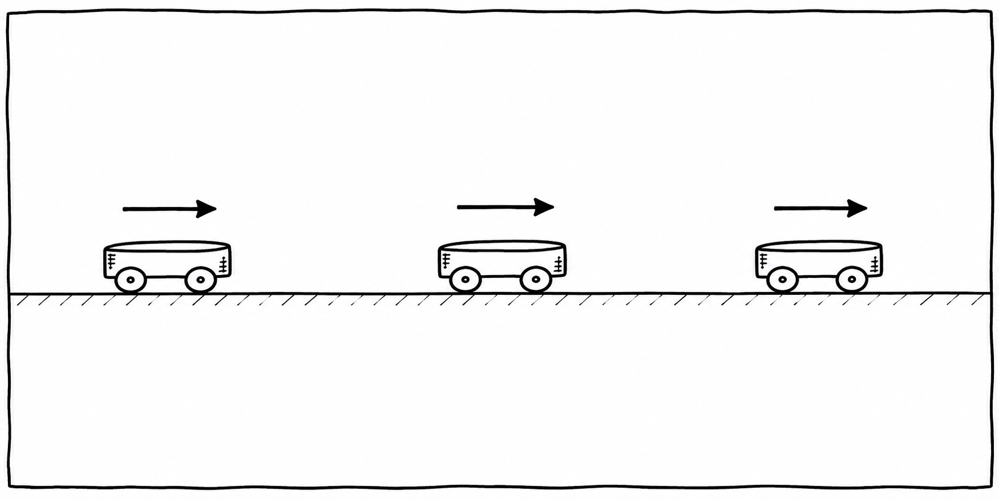

Station 2 · Newton 1
Das Trägheitsgesetz
Ein Körper behält seinen Bewegungszustand bei, solange die resultierende Kraft null ist.
Stell dir einen Wagen auf einer fast reibungsfreien Bahn vor. Du gibst ihm einen kurzen Schubs und lässt los. Danach rollt er weiter. Für das Weiterrollen braucht er keinen dauernden Schubs.

Was sagt Newtons erstes Gesetz?
Wenn sich alle Kräfte auf einen Körper ausgleichen, bleibt er in Ruhe oder bewegt sich gleichförmig auf einer geraden Bahn. Diese Eigenschaft heißt Trägheit.
Im Alltag gibt es fast immer Reibung. Darum werden rollende oder gleitende Dinge langsamer. Das widerspricht dem Gesetz nicht: Dann wirkt eine bremsende Kraft.